Why Berlin you may ask. There are many beautiful cities in Europe and I am not sure that Berlin is notably one of them, so why Berlin? I was born in 1934, the year after Hitler and the Nazi regime came to prominence and my earliest recollections include overheard discussions between my parents and others, expressing concern and dismay at the inevitability of an approaching world war. The Great War of 1914-18 was supposed to end all wars so why another after so few years? The words Hitler, Nazi, Germany, even Berlin were stamped into my mind as the personification and terrain of all that is evil. And then in 1939 the inevitability of war was realised. For five long years it raged. Berlin was its goal. In retaliation to the London blitz we were determined that Berlin would get the pasting it deserved. And it did. As children we played games. Our imagination turned the wood heap into a ‘Flying Fortress’ or a ‘Liberator’ and we flew our heroic missions over Germany to Berlin, dodging the flak, warding off the Nazi fighters and finally dropping our swag of bombs on the target below before making the hazardous journey back to mother England – Berlin getting all it deserved! And then the war was over and we became aware of that other ‘war’ the Nazis fought – the war against the defenceless Jewish and Gipsy populations, the death camps, the gas chambers, the Holocaust as it came to be called. Somehow at the centre of all this was Berlin. Soon followed the Russian occupation, the division of Germany into West and East, the separate division of Berlin and finally the Wall and the posturing of western politicians at the obscured Brandenburg Gate expressing their theatrical outrage. All of this gave the history of Berlin an immediacy and while no doubt the City’s early history is colourful and interesting, that recent history through which I have lived, encompassing my own life span, was what really interested me. I had to see it and walk it!
DAY ONE – Sunday 26 September 2004
ARRIVAL
Chris and I departed London Heathrow at 7.00am on a British Airlines flight for Berlin’s Tegal Airport. Chris with an eye to economy had booked our accommodation at the northern end of Friedrichstrasse in a ‘’ in the district of Mitte. Chris had done his homework very thoroughly both via internet and that
remarkable guide book, ‘Lonely Planet’. Because I had been touring UK I had given little thought to how we would use our three days. I need not have worried. Chris had it well planned. Three days! How could we see and feel Berlin, a city of 3.5 million souls in three days? We rapidly passed through the efficient exiting processes of Tegal airport and following the directions Chris had in his pocket we took a bus to Kurt Schumacherplatz UG station north of Tegal and the very modern and clean UG train to Oranienburgerstrasse station where on surfacing we found ourselves in Friedrichstrasse nearly opposite our , the ‘Hostel Adler’. Is this Berlin? Grey buildings still bearing the scars of the war, some pock marked with bullet holes, some clearly bombed out but standing and apparently still in use, graffiti covered walls, but not ordinary spray-can graffiti, remarkable art work by skilled artists, an overgrown empty space containing Indian village like structures? Yet, modern articulated
trams plying the streets and a superb underground rail system. Gaining our bearings we saw our
pension nearly opposite the train station on the western side of Friedrichstrasse. Back packs on we
made our way to the Hostel Adler (not bad appearance from the street) and into the unlit covered alley
office staffed by a very pleasant Vietnamese fellow. Reception procedure was standard and we were directed to our room, as wide as a corridor with two beds no more than 30cms apart. From the appearance of the ceiling the rooms had been created by subdividing what may have been a standard bedroom into two with a fixed partition. We each had a single towel measuring about 40 cms square, standard practice according to Chris in European accommodation of that level. Nevertheless, the beds were clean and, as it turned out, comfortable but perhaps we were so tired at the end of a day we would not have noticed. The Adler seemed to be under some form of re- construction, creating more two rooms out of one and peering through some door-holes covered by a rough drape one would see a completely gutted space on the other side. The bathrooms/toilets were uni-sex so one had to be a little careful when using either facility. It took me a little time to realise that we were in Ost (East)
Berlin, that part of Berlin that before unification was
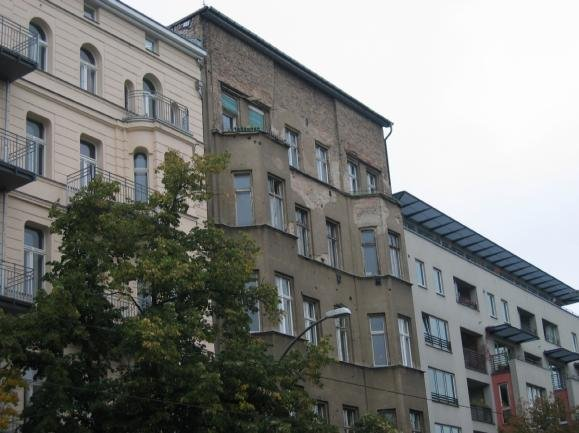
controlled by the communist German Democratic (which it wasn’t) Republic (GDR) and contiguous with East Germany. The West Berlin of before unification was an island within East Germany connected to the Federal Republic of Germany (West Germany) by the autobahn and by air to Tegal airport. While I was reasonably familiar with the history it took three days of traversing the streets of old Berlin and the fact
that where we were was ‘old Berlin’, what we might call these days the CBD. It was hardly surprising
that the Russians included this ‘old Berlin’, Berlin’s CBD, in the Russian sector – to become Ost Berlin. It was the Russians after all who ‘liberated’ Berlin from the Nazi rule with 1.5 million Soviet soldiers spearheading in from the east against fierce resistance from the Wehrmacht and SS, with huge loss of life; a resistance that continued unabated until Germany’s final capitulation on the 7th May 1945. Nevertheless, the western sector of Grosse (greater) Berlin, comprising the previous US, British and French sectors and extending north and south as well as west of the Russian sector was considerably greater in extent than Ost Berlin which of course had the advantage of contiguity with communist East Germany. This was the arrangement agreed to at the Conference of Yalta in February 1945. From the remnants of the Wall remaining today to the north, west and south of the old city (which seems to sit in a pocket of West Berlin) one has the false impression that it was the eastern sector that was surrounded by the wall.
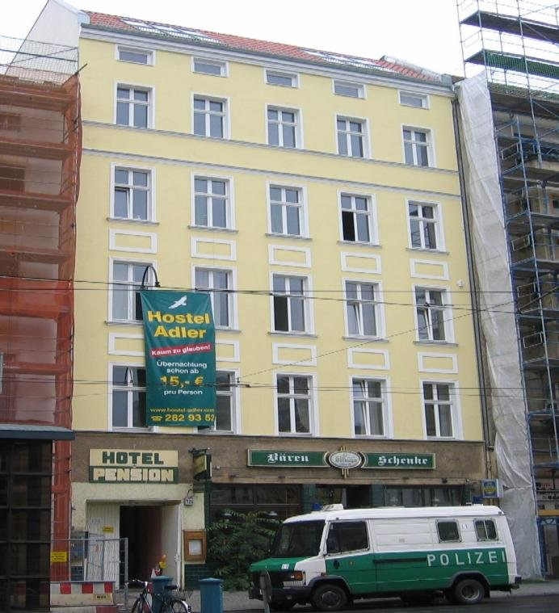
From the window of our little pension room – yes, we had a window, surprisingly clean too – we overlooked the intersection of Friedrichstrasse and Oranienburgerstrasse. Tram tracks ran in all directions with bright yellow two carriage trams that contrasted with the sombre grey buildings flanking the streets, trundling past with a surprising frequency, their wheels screeching on the tracks as they turned the corner. It was time to start walking and we were ready for lunch. The roads were glistening wet under grey skies.
wANDERING
We set out down Oranienburgerstrasse. In the distance through the misty rain we could see the tall TV tower with the large orb near its top, the Fernsehturn, built by the GDR in 1969. To our
immediate right was this strange part-demolished three or four storied building with the name ‘Tacheles’ across its front. Beneath, at street level, were up-market fashion salons, small boutiques in remarkable contrast to the building above. (More about ‘Tacheles’ later) We were to come to realise that this was commonplace in the old city – buildings still bearing the scars of WW2 as if badges of honour, reflecting the sheer scale of the destruction wrought on the city and the years of neglect since. The more iconic buildings we were to come across had been, or were still being, extensively renovated, but such buildings were not to be found in Oranienburgerstrasse with one exception.
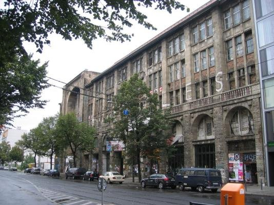
On the northern side of the Strasse we passed a somewhat bizarre looking structure surmounted by a gleaming gold dome with two smaller domes on corner towers fronting the street. The footpath in front of the building was cordoned off with police guards denying access. A gentleman entering the building in black suit and hat, by his appearance identified it as a synagogue – but why under guard? We came to realise that this northern part of Mitte was the Jewish quarter of Berlin before the war and possibly still is. Lonely Planet told us that the Synagogue was the Neue Synagogue and Centrum Judaicum (Jewish Museum). There were of course some relatively new buildings, with few exceptions of uninspiring design, four or five stories high – functional concrete blocks presumably built by the GDR.
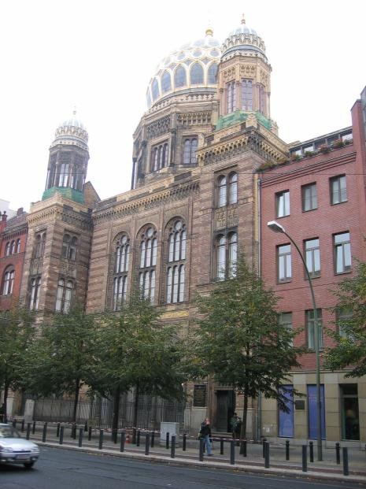
At the end of Oranienburgerstrasse we arrived at Monbijouplatz, an overused green space adjacent to an elevated rail viaduct. Amidst the litter scattered groups of people were eating lunch under rather threatening skies. Chris and I kept walking to the base of the viaduct to find a string of commercial premises within and partly beneath the structure.
One of these) proved to be a large restaurant complex occupying several of the spaces under the
viaduct, beautifully furnished in heavy dark timber with fully vaulted brick ceilings and the frequent rumble of trains passing above. We indulged in the very non-German fare of pizza and coke served by an attractive and attentive waitress who ‘sprechen sie Englisch’ very well. She told us she had always lived in the East and I wondered how people such as
she had made the transition following reunification.
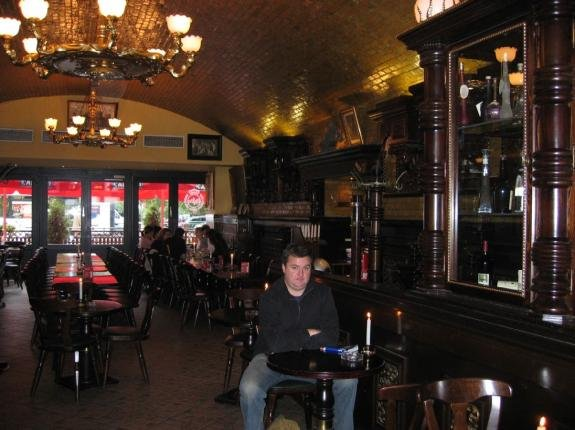
Following this late lunch and following the ‘Lonely Planet’ walking guide (the route in reverse which made it a little difficult) we arrived at the nearby Hackescher Hof Markt, a fully restored complex of eight courtyards referred to as Hof 1 to Hof 8 with fronting facades emblazoned with intricate designs. The Hackescher Markt, of Jewish origin, comprises restaurants, galleries, boutiques and small theatre. It was built in 1907 and has been faithfully restored since unification.
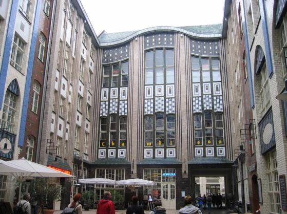
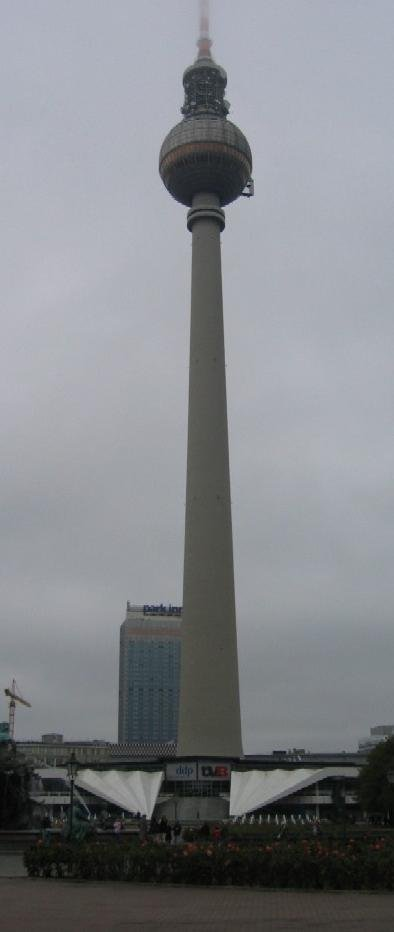
the curve of the rail viaduct
(Dircksenstrasse) passing a number of dilapidated buildings, bearing the scars of war, and vacant land where full demolition had occurred at some time arriving at Alexanderplatz and its Fernsehturm, towering some 368 metres above the pavement making it Berlin’s tallest structure. For the payment of a number of Euros one may go to the top and overview all of Berlin but we chose not to do that. The weather was murky and we decided that visibility would be too limited to justify the considerable cost. Lonely Planet told us that the Fernsehturm was built in 1969 to demonstrate the GDR’s technological superiority. The result is impressive enough and like much of the communist inspired re- construction, not notably attractive. The buildings adjacent to the Platz themselves are blocky in appearance and far from inspiring. The somewhat bizarre fountain surrounded by teutonic maidens emitting spurts of water from their various orifices with a Neptune like figure (the German equivalent perhaps) surmounting a central podium is called the Brunnen der Volkerfreundschaft (Fountain of Friendship among the
Hackescher Hof Markt
people). Christopher insisted on posing in the arms of
one of the maidens for a photo opportunity.
We left Alexanderplatz and meandered through streets past ruins, prosperous shops, churches and public buildings, notably the Rotes Rathaus (the Red Town Hall – the Berlin Senate Chamber), along Spandaustrasse, past the Marx-Engels Forum and into Karl Liebknechtstrasse. Opposite the Rathaus in a small park are the statues of the Rubble Workers, Trumerfrauen and Aufbauhelfer, honouring the men and women who cleared the rubble and re-built the city after the War – literally with their bare hands. (Lonely Planet). The Rotes Rathaus is an imposing terra-cota building with a central clock tower and dominates the surrounding streetscapes at the southern end of Alexanderplatz. If it was war damaged at all it has since been perfectly restored.
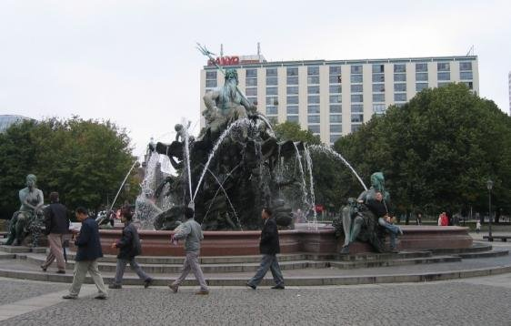
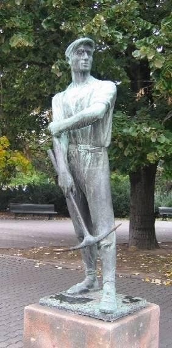
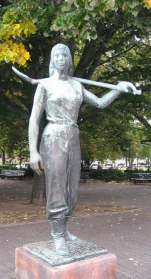
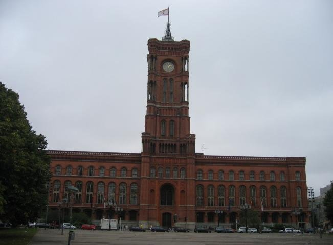
In Karl Liebknechtstrasse we crossed the River Spree and saw for the first time the appalling sight of the Palast der Republic (Volks Palast). This copper tinted oblong glass structure fronting the western bank of the Spree replaced the Berliner Stadschloss (City Palace), the royal residence
of Prussian Kings. One assumes the old palace was
extensively war damaged and was no doubt anathema to the communist GDR government. In its place Berlin now has this eyesore of a building which in turn is being demolished, a difficult task since it is full of insulating asbestos. It was of course, the headquarters of the GDR. On its western front it faces the Scholfzplatz, a barren piece of land that may have been the Stadschloss gardens (my conjecture) fronting the Spreekanal, a man-made anabranch of the Spree River.
Rubble Workers
Fronting the Spree and adjacent to the Volks Palast are buildings of earlier origin that give some impression of what the Berliner Stadschloss might have been like. They are the Ribbechhaus (a Rennaissance structure), the Alter Marstell (old stable) and the Neuer Marstell (new stable – built 1901). Lonely Planet told us that these once sheltered the royal horses and carriages and that during the 1918 November Revolution these buildings became the home and headquarters of the
revolutionary leaders. They are now public libraries. Crossing the Spree at the narrow bridge on Rathausstrasse we passed between the Neuer Marstell and the Volks Palast. On the northern facade of the Neuer Marstall facing into Rathausstrasse are two large bronze reliefs, one showing Karl Liebknecht’s proclamation of the German Socialist Republic from the balcony of the City Palace, the other the face of Carl Marx and the socialist struggle.
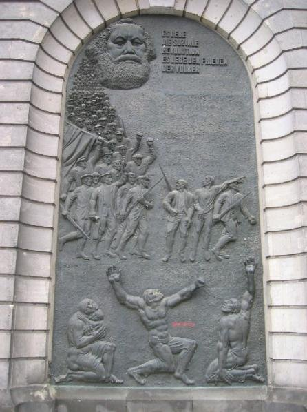
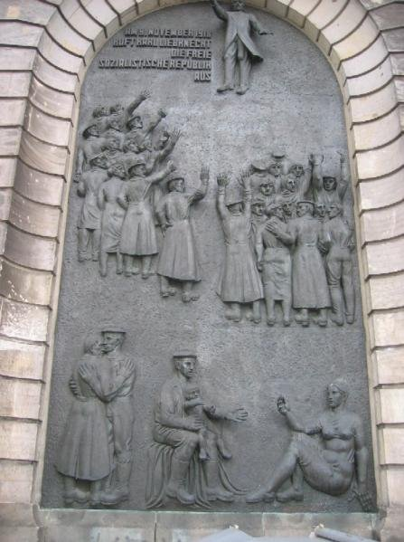
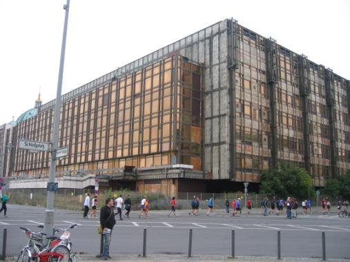
I was getting tired but we continued walking, more or less following the reverse direction of the Lonely Planet walking guide. Continuing west along Rathausstrasse we passed into Werderstrasse, crossed the Spreekanal and meandered towards Bebelplatz, off the Unter den Linden and flanked by the Alte Klonigliche Bibliothek (State Library) and the Staatsopera (State Opera). The Bebelplatz was originally called the Operaplatz and was the scene of the 1933 Nazi book burning which event is now memorialised in a glass roofed underground space containing empty library bookshelves. Unfortunately this area was cordoned off for construction purposes so we were unable to peer in. We entered the Opera House Restaurant (Opernpalais) behind the State Opera, once the Crown Princess’s palace, for ‘a bite to eat’ (Christopher’s term) and to give our legs some time to recover. We found ourselves in a lavishly furnished and well patronised establishment famous for its cakes – a huge variety. We were shown to a table and indulged in a quite lavish afternoon tea after which we felt sufficiently recovered to continue.
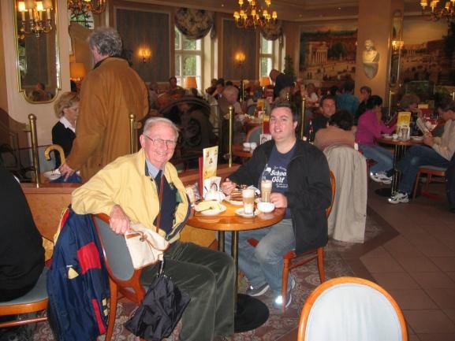
During our wandering of the streets of Berlin we came across large groups of runners on what was apparently a ‘fun run’. Not quite – it was the annual Berlin Marathon in which 36,193 from 91 countries (2004 figures) participate – not all running, many walking and looking decidedly exhausted, The event starts and finishes at the Brandenburg Tor (Gate) and while no doubt some finish the course relatively quickly we even saw others making their way rather dejectedly towards the finish line almost as evening was descending. Many of the streets had barriers erected and the route was obvious from the paper cups and plastic water bottles littering the way.
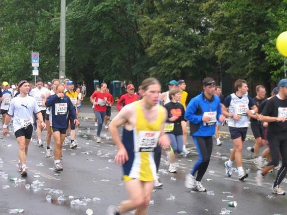
Having been re-energised by our afternoon tea in such salubrious surroundings we continued – walking. Heading south again we were in Markgrafenstrasse leading into the Gendarmeninmarkt. This beautiful restored square is flanked by two cathedrals of similar design. The Franzosischer Dom (French Cathedral) is on the northern side and the Deutsher Dom (German Cathedral) is on the southern side of the square. Central between the two Cathedrals is the Konzerthaus (Concert Hall), an imposing building built in 1821. All three were badly damaged in WW2, the Konzerthaus now fully restored and both cathedrals swathed in white plastic sheeting apparently still undergoing restoration or at least cleaning.
We turned west into Mohrenstrasse and then north into Friedrichstrasse and found ourselves in a very upmarket part of the old city. Two modern buildings (Quatier 205 and Quatier 206) contain arcades of shops on two levels selling expensive couture, designer labelled everything – Gucci, Yves St Laurent
and more. Then there is Galleries La Fayette, an obviously expensive department store – open even on a Sunday. Further north we passed car showrooms, more expensive street level boutiques in a mix of buildings, some restored and some relatively new, many colonnaded and then we reached the Unter den Linden again.
Unter den linden – Brandenburg tor
Tuning west into this fine and historical boulevard, the very heart of Berlin, we were moving into embassy- land. On the southern side occupying nearly a whole block was the imposing Russian Embassy, built I would guess in the GDR period in typical Communist neo- classicism style – substantial and no doubt functional but not at all inspiring and now flying the white, blue and red surprisingly distinctive flag of old Russia.
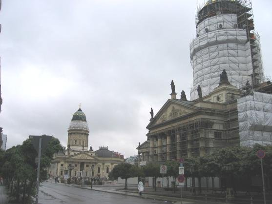
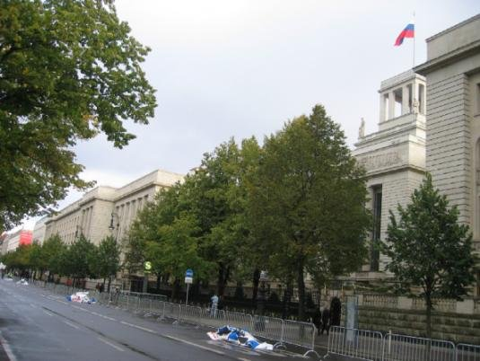
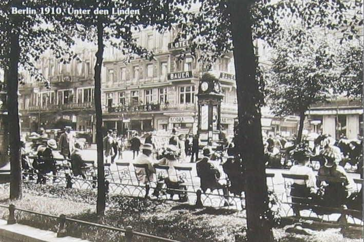
But we moved on and the Brandenburg Tor came into sight and after a long day this unique symbol of Berlin and its recent history had a hard to describe emotional impact on me. There it was; that icon of Berlin in the late afternoon sun, in heavy shadow from the eastern approach and after passing through, glistening gold from the west. In its past, black with grime, it became the sinister symbol of the Nazi regime, conjuring visions of goose-stepping SS and Wehrmacht troops passing under its portals. And then in the years that followed, looming above the crude graffiti covered Wall that divided the city it symbolised the post-war fate of Europe, the Cold War – East and West. And now? – a glistening hope for the future – a unified Berlin; a unified Germany.
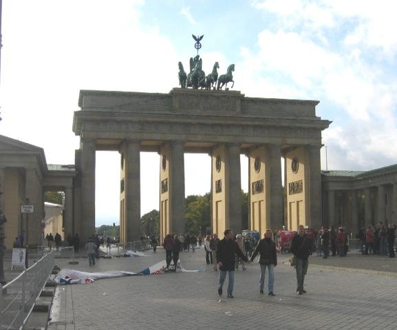
The day had become exhausting. The late afternoon sun was hot. We were parched. In the remnants of the now finished Berlin Marathon cold beer was available and a scattering of chairs remained. We downed a couple of pints (or were they half litres?) and felt invigorated. The Tiergarten was behind us, stretching out to the west bisected by the Strasse de 17 Juni and at its centre, visible in the setting rays of the sun, the Siegessaule, the Victory Column, commemorating forgotten victories of the Prussian period. (Did it survive WW2? – apparently it did. Lonely Planet tells us that the gilded lady on top of the column representing the Goddess of Victory and called by the locals Gold Elsie,ironically now the symbol of the Berlin gay community.
east of the gate
We continued towards the Reichstag, now fully restored and once again the seat of the Bundestag, the German Parliament. On the western side of the Franz Ebertstrasse on a fenced section of the Tiergarten are a number of large white Christian crosses (I counted 13) each bearing the name of a person and a date. On some a photograph is inset. They were all young men and women. These are memorials, not formally recognised by the German or Berlin Governments but tolerated, to those who lost their lives attempting to ‘cross over’ during the Cold War period. Presumably these 13 memorials referred to those attempting to cross over near that location. We found another set of memorials on the western bank of the River Spree where many cross-overs were attempted, some successful others resulting in death.
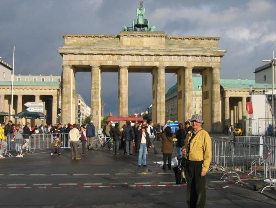
We moved on to the Reichstag, a great 18th century structure that has been completely restored – more than that – rebuilt internally preserving only the outer shell and incorporating a huge glass dome over an internal courtyard turning it into a vast atrium space. (Thank you Lonely Planet). The Reichstag fronts the Platz der Republic and I was able to take a frontal photograph from within the Platz, thanks to an accommodating guard who allowed me to pass through the barrier. It was not possible to enter the building although tourist can do so at other times. We turned away from the Reichstag to take in some of the other buildings in the vicinity. To the west across the Platz der Republic we could see an unusual structure of glass, columns and vaulting spaces enclosed by a broad semi-circular arch. Neither Lonely Planet nor our map could help in identifying it and although initially thinking it was the Haus der Kulturin der Welt (House of International Culture), that structure seems to be some distance beyond. Like many others we were to see, its architecture was absolutely brilliant – sparkling clean crisp lines. In Franz Ebertstrasse opposite the rear of the Reichstag is the Haus Bundestag (Parliamentary Offices) in more traditional style. Then continuing north on Franz Ebertstrasse and crossing Dorotheenstrasse into Frau Ebert Platz we observed
the remarkable Jacob Kaiser Haus. Further into Frau Ebert Platz and Paul Lobe Allee is the Paul Lobe Haus to the left bridged across the Spree to Marie Elizabeth Luber Haus to the right. This incredibly adventurous architecture is modern Berlin in remarkable contrast to the old City. (It was on Dorotheenstrasse that we saw some very dispirited Marathon runners slowly making their way to the finish line)
I think we were limping at this point as we made our way back to Mitte. I can’t recall whether we entered our pension at this point or did we simply continue down Oranienburgerstrasse in search of a beer and a feed? We found both, first a beer (a huge one) in a Berlin pub where Marathon revellers were celebrating an apparent win and then in a side street off the Strasse a good feed (Chris a goulash and me a very tasty green salad) and a flask of passable wine. Then it was back to the Hostel Adler and our tiny room for rest.
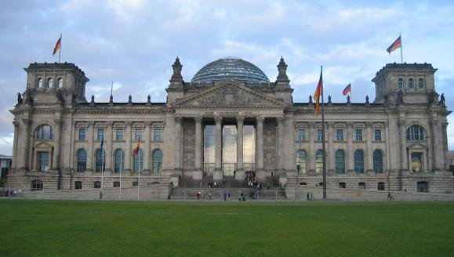
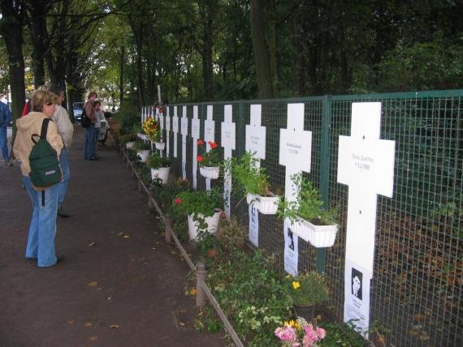
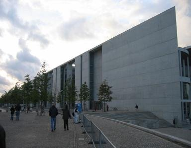
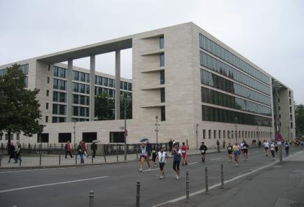
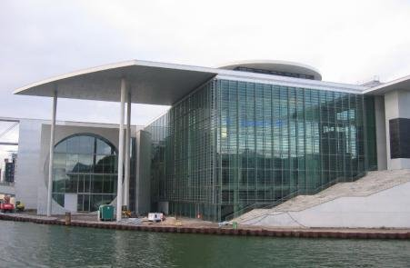
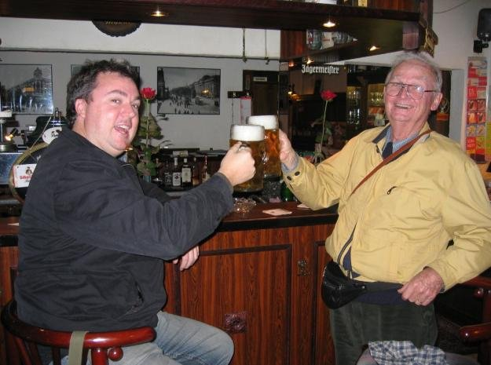